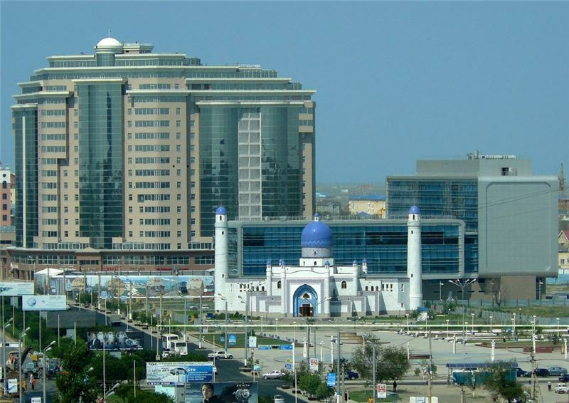

Atyrau
АТЫРАУ
Город, расположенный на стыке двух континентов, Европы и Азии
Атырау (Гурьев) – город, областной центр Атырауской области Республики Казахстан. Город расположен в двух частях света – в Европе и в Азии.
Атырау – крупный центр по добыче и переработке нефти и газа. История города Атырау довольно необычна. Город был образован на месте поселения, которое называлось Усть-Яицкий острог. Это поселение было построено купцом из города Ярославля Гурием Назаровым на собственные деньги в 1640 году в устье реки Яик при впадении в Каспийское море.
В его честь и назвали населенный пункт.
В 1992 году город переименовали в Атырау. В переводе с казахского это означает «устье». Изначально город был основан на побережье, а в настоящее время отступает от него на 25-30 км. В этом городе строились самые первые заводы по очистке нефти и по производству нефтяного оборудования.

Кроме того, здесь был основан крупнейший в республике рыбоконсервный завод. Именно во время его строительства в 30-х годах ХХ века город стал стремительно строиться. Культурная жизнь Атырауской области богата и значительна. Есть свой драматический театр им. М. Утемисова, областная филармония им. Н. Жантурина, знаменитый оркестр казахских национальных инструментов им. Д. Нурпеисовой, историко-краеведческий музей, музей декоративно-прикладного искусства.